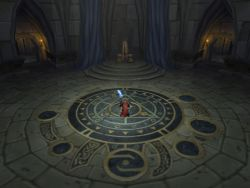

1er Août 2018
3ème jour de la Décade du Lapin ( Lune de l'Esprit ) -
Guildes
Gardiens Doriàans
Blasius
Age : 24ans
Sexe : Homme
Race : Humain
Faction : Alliance
Formation : Paladin
Description :
C'est sous un tas d'autre livre que vous trouvez ce vieux grimoire. Couverture de cuir usé, page jaunis par le temps.
Lorsque vous le prenez en main, l'amertume et la tristesse envahisse votre corps, et manque de vous faire pleurer. Celui qui a écrit ce livre doit avoir un lourd passé...
En ouvant le livre, vous devoilez enfin la première page, en haut a droite, le coin de la feuille est orné de magnifiques lettrines: "B.R.".
La page suivant vous trouvez le texte, la tristesse devenant plus profonde, sentiment décuplé lorsque vous voyez l'écriture d'un enfant, celle d'un enfant triste et tremblant, qui écrit ceci:
Je m'appel Blasius Rudiger, moi et mon frère avons reussi a fuir notre ancien village de Pyrewood, prêt de Lordaeron.
J'etait a la Forge, - a travailler pour faire vivre la famille après la mort de mon père lors de la seconde guerre contre la Légion Ardente -, lorsque tout est arrivé.
Les Morts ce sont relever, et nous ont attaqué au village, j'ai reussi a fuir, en esperant trouver du secours a Lordaeron...
Malheureusement, Lordaeron aussi etait attaqué, la fumée s'echappais des ruines encore en feu des maisons, les derniers survivant massacré par les Morts. Je restait bloqué devant ce spectacle de désolation, mes jambes tremblantes de terreurs, et de tristesse, impossible de mettre un pied devant l'autre. Je serais surement Mort si mon grand frère, - qui lui avait decidé de devenir Paladin a la mort de mon père -, ne m'avais pas sauvé.
Lorsque nous somme retourné a Pyrewood pour chercher ma mère, la ville n'etait elle aussi plus qu'un champs de ruine, seulement sur le sol il n'y avais aucun corps.
Lorsque nous somme entrer dans notre maison, enfin ce qu'il en reste, il ne restait plus rien, ma mère avait egalement disparu. Enfin, pas pour très longtemps, car moi et mon frère n'avons pas tarder a nous faire attaquer. En fuite, Raphael mon frère fut durement touché en nous defendant de ce "Fléau".
Après plusieurs jours de marche, moi et mon frère mourrant avont reussi a rejoindre Dalaran, ville presque intact grace au puissant mage qui y reside. Seulement, ils avaient peur de nous, de ce que nous avions pu devenir, et ne nous on pas laisser rentrer nous cacher derrière leurs champs de force.
Là aussi nous avons du fuir, l'etat de mon frère empirais de jours en jours, j'avais reussi a créer avec des branche une sorte de charue ou il pouvais tenir allonger pendant que je le tirais.
Son épée en main, j'ai franchit les montagnes d'Alterac, envahis par les ogres, redescendu au sud vers Tarren, qui lui aussi avait été envahi...
Le desespoire commencais a m'envahir, la fatigue, la douleur également, lorsque je me suis effondré au pied d'une tour en ruine.
Reveillé je ne sais combien de temps plus tard a Northshire, ou l'on m'a annoncé la Mort de mon frère, je me suis juré de proteger le peuple et de servir la Lumière. Je suis devenu Paladin...
Plus d'infos sur Blasius >>>